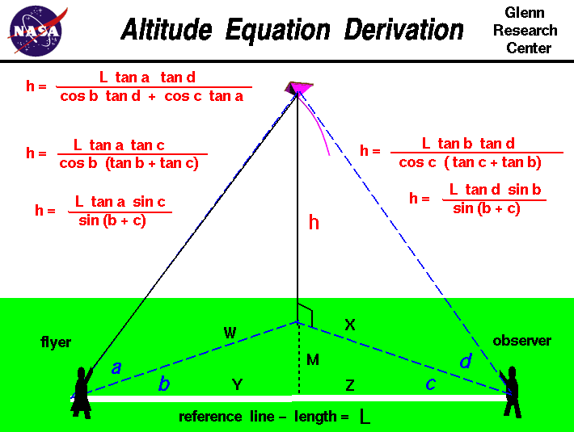

|

Flying kites is a relatively
safe
and inexpensive way for students
to learn the basics of forces and
the response of vehicles to external forces.
Students can also use math techniques learned in high school to determine the
altitude
of the kite during the
flight.
On this page we derive the equations which are shown on the figure
to determine the altitude
of a kite during the flight.
The procedure requires a flyer and an observer to measure several angles. The observer
is placed some distance L from the flyer along a reference line which is shown in white
on the figure. While the kite is flying, the flyer
measures the angle a between the ground and the kite.
This measurement is taken perpendicular to the ground. The flyer then measures
the angle b between the kite and the reference line.
This measurement is taken parallel to the ground.
The observer measures the angle d from the ground to the
kite and the angle c, parallel to
the ground, between the direction the observer is facing and the reference line.
With the four measured angles and the measured distance between the
observers, we can use some relations from
trigonometry
to derive the equation for the altitude h.
We will need four "construction" triangles to derive the equation.
The first two triangles are formed by the altitude h, the
line of sight from the observers to the kite, and the ground
track of the line of sight. From the flyer, we have our first trigonometry
relations:
Eq. 1:
h / w = tan a
Eq. 1a:
h = w * tan a
Eq. 1b:
w = h / tan a
and from the observer:
Eq. 2:
h / x = tan d
Eq. 2a:
h = x * tan d
Eq. 2b:
x = h / tan d
If we drop a perpendicular line from the base of the altitude to the reference line,
we construct two triangles with the following properties:
Eq. 3:
y / w = cos b
Eq. 3a:
y = w * cos b
Eq. 4:
m / w = sin b
Eq. 4a:
m = w * sin b
Eq. 5:
z / x = cos c
Eq. 5a:
z = x * cos c
Eq. 6:
m / x = sin c
Eq. 6a:
m = x * sin c
Eq. 7:
L = y + z
We will start with Eq. 7 and substitute the value of y from Eq, 3a and
the value of z from Eq, 5a:
Eq. 8:
L = w * cos b + x * cos c
Now substitute the value for w from Eq. 1b and the value of x from Eq. 2b:
Eq. 9:
L = h * (cos b / tan a) + h * (cos c / tan d)
Eq. 9a:
L = h * ((cos b / tan a) + (cos c / tan d))
Solve for h:
Eq. 10:
h = (L * tan a * tan d) / ( cos b * tan d + cos c * tan a)
A detailed analysis of this trigonometry problem indicates that we really
only need three angle measurements along with the reference length measurement
to completely determine the answer.
The angles a, b, c, and
d are related to each other and we can eliminate one of the angle
measurements and still determine the altitude.
We can equate the values of h from Eq. 1a and Eq. 2a:
Eq. 11:
h = w * tan a = x * tan d
Eq. 11a:
w / x = tan d / tan a
We can derive another relationship for w/x by using Eq. 4a and Eq. 6a:
Eq. 12:
m = w * sin b = x * sin c
Eq. 12a:
w / x = sin c / sin b
Then:
Eq. 13:
tan d / tan a = sin c / sin b
Eq. 13a:
tan d = (sin c / sin b) * tan a
Eq. 13b:
tan a = (sin b / sin c) * tan d
We can eliminate angle a from the altitude equation by substituting
Eq. 13b into Eq. 9a:
Eq. 14:
L = h * ([(cos b * sin c)/ (sin b * tan d)] + (cos c / tan d))
Using the trigonemetric identity: sin/cos = tan:
Eq. 15:
L = h * ( sin c / (tan b * tan d) + (cos c / tan d))
Eq. 15a:
L * tan d = h * ( sin c / tan b + cos c )
Eq. 15b:
L * tan d * tan b = h * ( sin c + cos c * tan b )
Eq. 15c:
L * tan d * tan b = h * cos c * ( tan c + tan b )
Solve for h:
Eq. 16:
h = (L * tan b * tan d) / (cos c * (tan c + tan b))
There is a trigonometric identity, called a double angle formula,
for the value of:
Eq. 17:
tan c + tan b = sin(b + c) / (cos b * cos c)
Susbstituting Eq. 17 in Eq. 16:
Eq. 18:
h = (L * tan d * sin b) / sin(b + c)
If, at Eq. 14, we had decided to eliminate angle d in Eq. 9a by
using Eq. 13a, the resulting altitude equation is:
Eq. 19:
h = (L * tan a * tan c) / (cos b * (tan b + tan c))
And the double angle formula is
Eq. 20:
h = (L * tan a * sin c) / sin(b + c)
You can use any of these equations to determine the height of any object
from a tall tree to a flying rocket.
If you have your observers take all four angle measurements, you can actually
make three calculations of the height, which can help to eliminate errors
in the measurments.
If you do not know trigonometry, you can still determine the altitude
of the kite by using a
graphical solution
from the four angle measurements.
Guided Tours
-
 Kite Flying
Kite Flying

Navigation ..


- Beginner's Guide Home Page
|